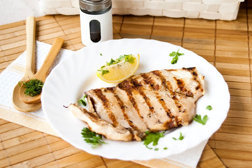

Страви на грилі
Свінне кюфте
0.80 бр / 2.60 лв
Соковите фаршоване м'ясо свинини, приготовлене на грилі.
Кебапче зі свинини
0.80 бр / 2.60 лв
Пряне кебапче на вугіллі.
Шашлик зі свинини
0.100 кг / 5.50 лв
Шашлик зі свинини з перцем і цибулею.
Свинина з шиї
0.200 кг / 11.50 лв
Ніжний шматок свинячої шиї, смажений на грилі.
Свинячі ребра
0.250 кг / 11.50 лв
Ніжні реберця з хрусткою скоринкою.
Домашня ковбаса
0.200 кг / 11.50 лв
Соковита традиційна ковбаса.
Свинина плескавица + картопля
0.200 кг / 10.50 лв
Велика котлета зі свинини з картоплею.
Яловиче кюфте
0.100 кг / 5.00 лв
Ніжна яловича котлета з димком.
Яловича плескавица + картопля
0.200 кг / 11.80 лв
Котлета з яловичини з гарніром.

Куряче філе
0.200 кг / 11.50 лв
Смажене куряче філе – легке і соковите.
Курячий шашлик
0.130 кг / 5.50 лв
Шматочки курки з овочами, приготовлені на грилі.